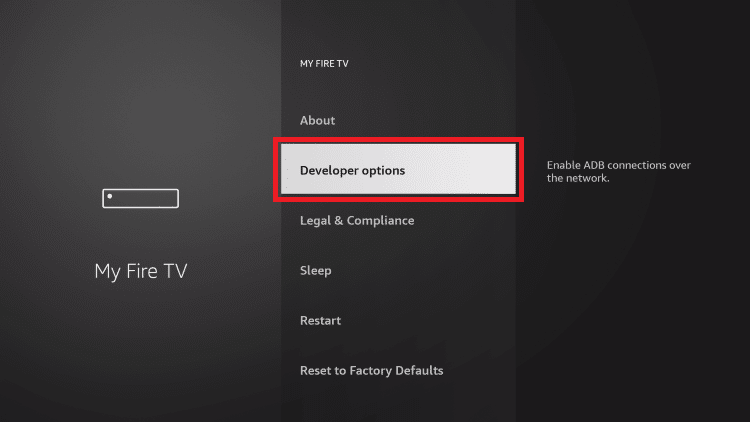
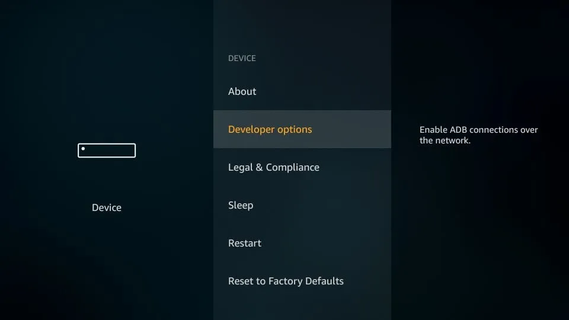
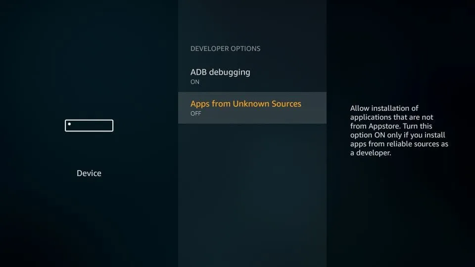
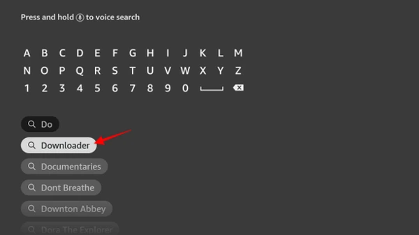
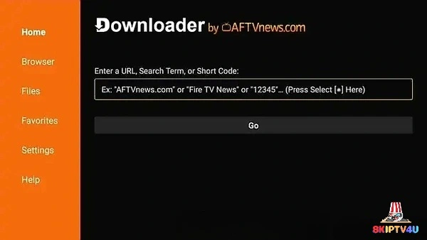
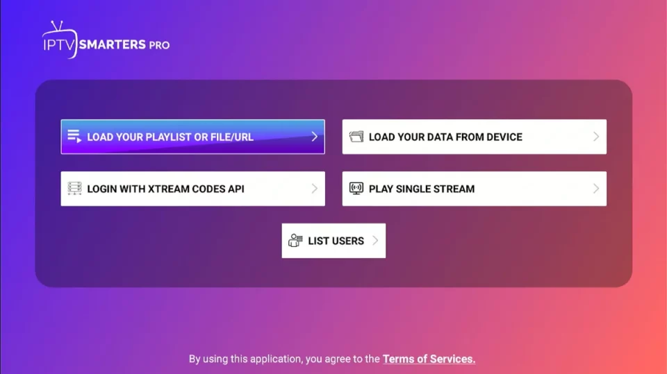

IPTV on Firestick normally means using an IPTV player application on an Amazon Fire TV device. The player provides the interface, while your authorized IPTV provider supplies the account or playlist that loads live television, video on demand and guide information.
What You Need to Install IPTV on Firestick
- An Amazon Fire TV Stick or compatible Fire TV device connected to your television.
- A stable internet connection and enough free device storage.
- An IPTV service and login details from a provider you are authorized to use.
- A compatible IPTV player. IPTV Smarters is one example, but players differ by device and availability.
- Downloader when the player must be installed from a legitimate source outside the Amazon app store.
How the IPTV Firestick Installation Process Works
- Prepare the Firestick and open its device settings.
- Find Developer Options and allow the installation permission required by Downloader.
- Install and open the official Downloader app.
- Obtain a compatible IPTV player from a legitimate publisher or provider source.
- Install the player, choose a login method and enter your provider details.
- Refresh the channel list, VOD library and EPG, then start watching.
Step 1 - Prepare Your Firestick
Connect the Fire TV Stick to the television, select the correct HDMI input and complete the normal Firestick setup. Make sure the device is online before installing anything. Fire OS menus change over time, so the labels below may look slightly different on your model.
From the Firestick home screen, open Settings, choose My Fire TV, and then select About.

Step 2 - Find Developer Options
In About, highlight the Fire TV Stick device name. On some Fire OS versions, Developer Options appears immediately; on others, select the device name several times until a confirmation appears. Return to the previous menu and open Developer Options.




Step 3 - Enable Install Unknown Apps
Newer Fire OS versions commonly show Install Unknown Apps. Older devices may use Apps from Unknown Sources. Open the setting, select Downloader and allow it to install applications when prompted. Only install apps from sources you trust and recognize.



Step 4 - Install Downloader on Firestick
From the home screen, choose Find or Search, type Downloader, select the official Downloader app and choose Get or Install. Open it after the installation finishes and accept only the permissions needed for the download you intend to make.



Step 5 - Download and Install an IPTV Player
Firestick does not install IPTV as a service. It installs a player that connects to your provider. IPTV Smarters is one example of a compatible player, but it is not the only option and its availability can change. Use the player publisher's current installation method or instructions from your authorized provider.
When Downloader is needed, enter only a URL or code supplied by that legitimate source. This guide does not invent APK addresses or Downloader codes. Download the correct Fire OS version, follow the on-screen installation prompt, then delete the installer file if you need to recover storage.

Step 6 - Set Up IPTV on Firestick
Open the IPTV player and select the login method it provides. Depending on the player and service, you may see options for Xtream Codes API, an M3U playlist, or a portal connection. Choose the method your provider supports.
For an Xtream Codes-style login, the provider normally supplies a username, password and server or portal URL. Enter those values exactly as provided. Do not guess a server address or reuse credentials from another service. After submitting the form, allow the player time to download the categories and playlist.

Step 7 - Add Your IPTV Login Information
Enter your IPTV Network Hub credentials exactly as provided. If your player offers an option such as Xtream Codes API, select it and enter the corresponding username, password, and server URL.

Step 8 - Watch Live TV on Firestick
Once the data has loaded, open the player and choose Live TV. Select a category, then select a channel. Available categories and content depend on the provider. The same player may also expose VOD or Movies if those features are included in your service.

Frequently Asked Questions
Can I install IPTV on a Firestick?
Yes. Install a compatible IPTV player, then sign in with details from an IPTV provider you are authorized to use.
How do I install IPTV on Amazon Firestick?
Prepare the device, install Downloader if needed, allow the required installation permission, install a compatible player and enter your provider credentials.
Do I need Downloader for IPTV on Firestick?
Not always. It is useful when a player is not available directly in the Amazon app store, but installation methods vary.
How do I enable Install Unknown Apps?
Open Settings, My Fire TV and Developer Options, choose Install Unknown Apps, then allow Downloader. Older Fire OS versions may use Apps from Unknown Sources.
Which IPTV player can I use on Firestick?
Use a player compatible with your Fire OS version and obtained through a legitimate source. IPTV Smarters is one example, not the only option.
How do I enter IPTV credentials on Firestick?
Open the player, choose its provider login method and enter the username, password and server or portal details supplied by your provider.
How do I add EPG to IPTV?
Some providers include EPG automatically. Otherwise, use the player's EPG option and the details supplied by your provider.
Why is IPTV buffering on my Firestick?
Check the connection, restart the Firestick and router, reduce network congestion, update the player and test another channel.
Why are my IPTV channels not loading?
Check credentials, server status, internet connection and playlist refresh options. Contact the provider if the account or service is unavailable.
Can I use IPTV on Fire TV Stick 4K?
Usually, yes, if the player supports the Fire OS version and the device has sufficient storage and a stable connection.